Библиотека jQuery
Разработка динамичесих веб приложений
Гладкий Максим Валерьевич / github:MaksHladki
Содержание лекции
Определение
jQuery — библиотека JavaScript, фокусирующаяся на взаимодействии JavaScript и HTML. Библиотека jQuery помогает легко получать доступ к любому элементу DOM, обращаться к атрибутам и содержимому элементов DOM, манипулировать ими. Также библиотека jQuery предоставляет удобный API для работы с AJAX
Преимущества использования
- Отделение кода разметки от поведения - вынесение js из разметки позволяет сделать саму разметку более чистой и понятной. Позволяет разделить возможность разработки между веб-дизайнером и программистом
- Упрощение работы с кодом - jQuery предлагает простой и эффективный синтаксис для манипулирования элементами на веб-странице
- Расширяемость - весь код jQuery открыт для просмотра и изменения. Также можно создавать свои плагины jQuery
- Кроссбраузерность - jQuery 3.0 имеет поддержку большинства известных браузеров (IE 9+)
- Собственная экосистема - объединяет целую коллекцию библиотек, построенных на основе jQuery (например, jQuery UI)
Ветки
- jQuery 3.11 поддержка IE 9+
- jQuery 2.2 - поддержка IE 9+
- jQuery 1.12 - поддержка IE 6+
Поддержка браузерами
Desktop
- Chrome: (Current - 1) and Current
- Edge: (Current - 1) and Current
- Firefox: (Current - 1) and Current
- Internet Explorer: 9+
- Safari: (Current - 1) and Current
- Opera: Current
Mobile
- Stock browser on Android 4.0+
- Safari on iOS 7+
Версии jQuery 3.1
- Commpressed - 85KB
- UnCommpressed - 261KB
- Commpressed Slim - 68KB
- UnCommpressed Slim - 209KB
Особенности Slim-версии
Удалено:
- Устаревший код
- Ajax-функционал ($.ajax, $.get, $.post, $.ajaxSetup, .load, .ajaxStart и т.д.
- Работа с XML и JSONP
- Анимация ($.easing, $.Animation, $.speed)
Подключение библиотеки
<!DOCTYPE html>
<html>
<head>
<title>jQuery Hello World</title>
</head>
<body>
<script src="jquery-3.1.1.min.js"></script>
</body>
</html>
Использование CDN
<script src="https://code.jquery.com/jquery-3.1.1.min.js"></script>
Функция jQuery
jQuery(document).ready(function(){
// code
});
$(document).ready(function(){
// code
});
$(function(){
// code
});
Выборка элементов
Базовые селекторы
Описание
| Шаблон | Описание | Пример |
|---|---|---|
| $('*') | выборка всех элементов страницы | $('*').css('color', 'red') |
| $('element') | выборка всех элементов с данным именем тега | $('img') |
| $('#id') | выборка элемента с данным значением атрибута id | ('#btn1') |
| $('.class') | выборка всех элементов с данным значением атрибута class | $('.btn') |
| $('selector1, selector2') | выборка всех элементов, соответствующих указанным селекторам | $('body, .btn') |
Селекторы отношения
| Шаблон | Описание | Пример |
|---|---|---|
| $(selector1 > selector2) | выборка элементов, которые соответствуют второму селектору и являются дочерними для элементов первого | $('#menu > a') |
| $(selector1 + selector2) | выборка элементов со вторым селектором, которые располагаются непосредственно за элементами первого | $('.closed + .open') |
| $(selector1 ~ selector2) | выборка элементов со вторым селектором, которые располагаются на одном уровне с элементами первого | $('.closed ~ .open') |
Селекторы атрибутов
Описание
| Шаблон | Описание | Пример |
|---|---|---|
| [attr] | выборка элементов с атрибутом attr | $("a[class]") |
| [attr='value'] | выборка элементов, у которых значение attr равно value | $("a[class='redStyle']") |
| [attr^='value'] | выборка элементов, у которых значение attr начинается со строки value | $("a[class^='red']") |
| [attr$='value'] | выборка элементов, у которых значение attr оканчивается на строку value | $("a[class$='Style']") |
| [attr~='value'] | выборка элементов, у которых attr имеет список значений, разделенных пробелом, и одно из этих значений равно value | $("a[class~='redStyle']") |
| [attr *= 'value'] | выборка элементов, у которых значение атрибута attr имеет подстроку value | $("a[class *= 'Style']") |
| [attr|='value'] | выборка элементов, у которых значение атрибута attr представляет либо значение value, либо список значений, разделенных дефисами, и первое значение в этом списке равно value | $("a[class|='red']") |
Фильтры
Базовые фильтры
| Фильтр | Описание |
|---|---|
| :eq(n) | выбирает n-й элемент выборки |
| :even | выбирает элементы с четными номерами |
| :odd | выбирает элементы с нечетными номерами |
| :first | выбирает первый элемент выборки |
| :last | выбирает последний элемент выборки |
| :gt(n) | выбирает все элементы с номером, большим n |
| :lt(n) | выбирает все элементы с номером, меньшим n |
| :header | выбирает все заголовки (h1, h2...) |
| :not(селектор) | выбирает все элементы, которые не соответствуют селектору |
Фильтры контента
| Фильтр | Описание |
|---|---|
| :contains('text') | получает все элементы, которые содержат текст text.. |
| :has('селектор') | получает все элементы, которые содержат хотя бы один дочерний элемент, соответствующий селектору |
| :empty | получает все элементы, которые не имеют дочерних элементов |
| :first-child | получает все элементы, которые являются первыми дочерними элементами в своих родителях |
| :last-child | получает все элементы, которые являются последними дочерними элементами в своих родителях |
| :nth-child(n) | получает все элементы, которые являются n-ными элементами в своих родителях (нумерация идет с единицы) |
| :nth-child(even) | получает все элементы, которые являются четными элементами в своих родителях (нумерация идет с единицы) |
| :nth-child(odd) | получает все элементы, которые являются нечетными элементами в своих родителях (нумерация идет с единицы) |
| :only-child | получает все элементы, которые являются единственными дочерними элементами в своих родителях |
| :parent | получает все элементы, которые имеют, как минимум, один дочерний элемент |
Фильтры элементов форм
| Фильтр | Описание |
|---|---|
| :button | получает все элементы button и элементы input с типом button |
| :checkbox | получает все элементы checkbox |
| :checked | получает все отмеченные элементы checkbox и radio |
| :disabled | получает все элементы, которые находятся в неактивном состоянии |
| :enabled | получает все элементы, которые находятся в активном состоянии |
| :file | получает все элементы file |
| :input | получает все элементы input |
| :hidden | получает все скрытые элементы |
| :password | получает все элементы password |
| :radio | получает все элементы radio |
| :reset | получает все элементы reset |
| :selected | получает все отмеченные элементы option |
| :submit | получает все элементы input с типом submit |
| :text | получает все элементы input с типом text |
| :visible | получает только видимые элементы |
Поиск в выборке
| find(селектор) | поиск в выборке объектов, соответствующих селектору |
| find(элемент) | поиск в выборке объектов, соответствующих данному элементу html |
| find(jQuery) | поиск в выборке объектов, соответствующих объекту jQuery |
Навигация по странице
Часть 1
| children([selector]) | возвращает набор элементов, состоящий из прямых потомков каждого элемента исходного набора |
| closest(selector[,context]) | возвращает ближайшего родителя, соответствующему селектору |
| next([selector]) | получает следующий элемент, находящийся на одном уровне с текущим |
| nextAll([selector]) | получает все следующие элементы одного уровня по отношению к текущему |
Часть 2
| prev([selector]) | получает предыдущий элемент по отношению к текущему |
| prevAll([selector]) | получает все предыдущие элементы по отношению к текущему |
| siblings([selector]) | позволяет получить все элементы уровня, на котором находится текущий (комбинация nextAll и prevAll) |
| parent([selector]) | получение родителя элемента |
Пример
Код страницы
<!DOCTYPE>
<html>
<head>
<title>Jquery</title>
</head>
<body>
<section id="news" class="news">
<div id="article_main" class="article" data-article-id="47">
<div class="header">
<p>article #2</p>
</div>
<div class="body">
<p>Hello</p>
</div>
</div>
<div class="article" data-article-id="101">
<div class="header">
<p>article #2</p>
</div>
<div class="body">
<p>Hey</p>
</div>
</div>
</section>
<script src="jquery-3.1.1.min.js"></script>
</body>
</html>
Пример 1
$(function () {
var newsElement = $('#news');
console.log(newsElement);
});

Пример 2
$(function () {
var newsElement = $('.news');
console.log(newsElement);
});
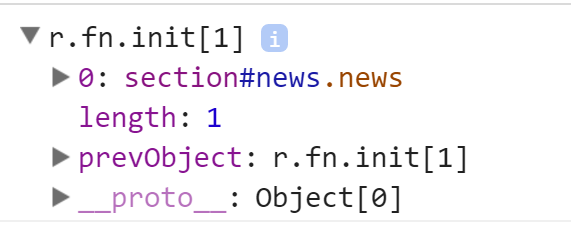
Пример 3
$(function () {
var headers = $('.header');
console.log(headers);
for(let header of headers){
console.log(header);
}
});
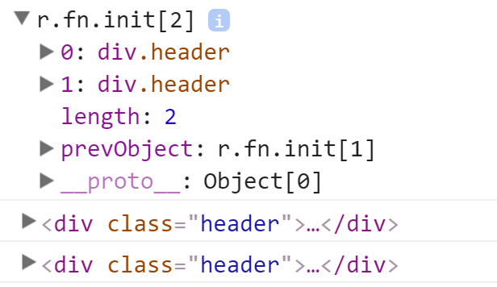
Пример 4
$(function () {
var headers = $('#article_main .header');
console.log(headers);
$.each(headers, (index, value) => {
console.log(value);
});
});
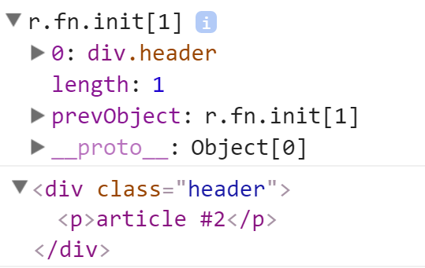
Пример 5
$(function () {
var articles = $('#news > .article');
console.log(articles);
});
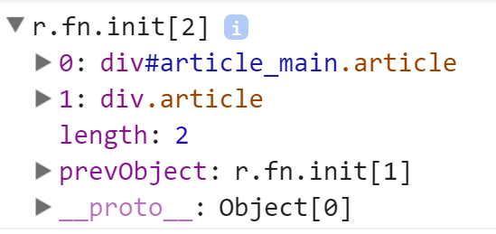
Пример 6
$(function () {
var headers = $('#news > .header');
console.log(headers);
});
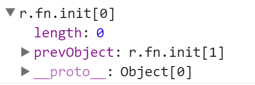
Пример 7
$(function () {
var elements = $('div[class*="eade"]');
console.log(elements);
});
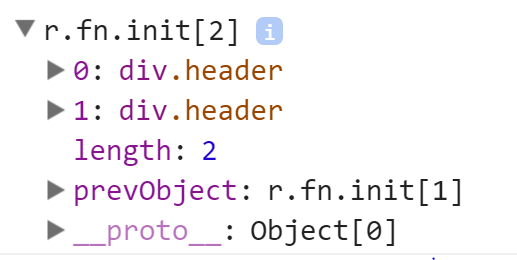
Пример 8
$(function () {
var article = $('*[data-article-id="101"]');
console.log(article);
var articleId = article.data("article-id");
console.log(articleId);
});
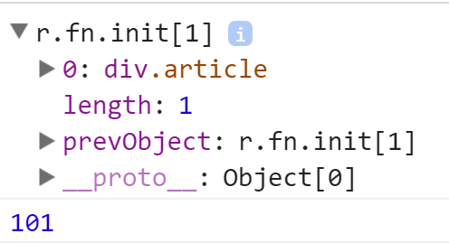
Пример 9
$(function () {
var article = $('.article:eq(1)');
console.log(article);
});
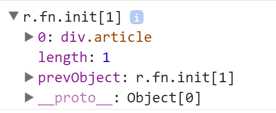
Пример 10
$(function () {
var articles = $('.article:not(#article_main)');
console.log(articles);
});
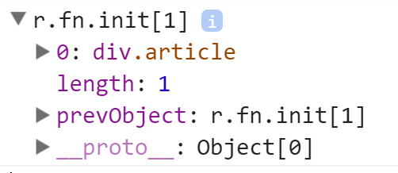
Пример 11
$(function () {
var body = $('.body:last');
console.log(body);
});
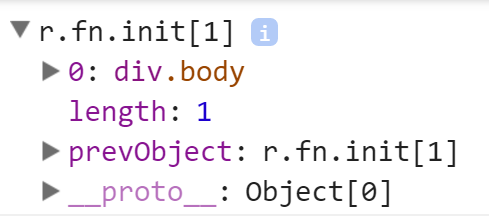
Пример 12
$(function () {
var body = $('.article .body>p:contains("Hey")').parent()[0];
console.log(body);
});
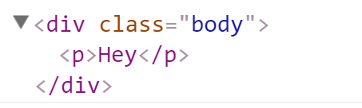
Пример 13
$(function () {
var articles = $('div').filter(function(){
return $(this).hasClass('article');
});
console.log(articles);
});
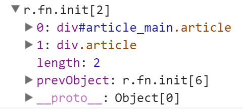
Пример 14
$(function () {
var articles = $('.article');
var headers = articles.find('.header');
console.log(headers);
});
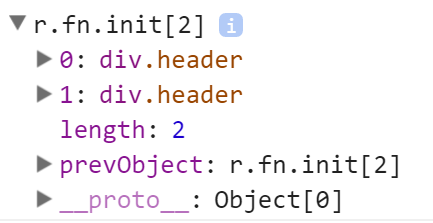
Пример 15
$(function () {
var article = $('#article_main');
console.log(article.children());
});
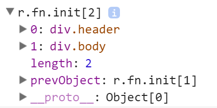
Пример 16
$(function () {
var article = $('#article_main');
console.log(article.children('.body'));
});
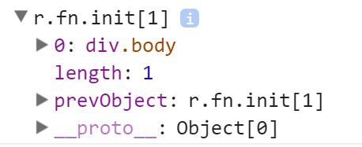
Пример 17
$(function () {
var pharagraps = $('.header > p');
console.log(pharagraps.closest('.news'));
});
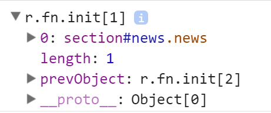
Пример 18
$(function () {
var mainArticle = $('#article_main');
console.log(mainArticle.next()[0]);
});
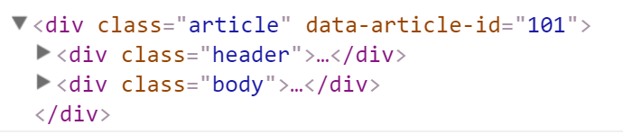
Пример 19
$(function () {
var mainArticle = $('#article_main');
var secondArticle = $('.article[data-article-id="101"]');
console.log(secondArticle);
console.log(mainArticle.siblings(secondArticle)[0]);
});
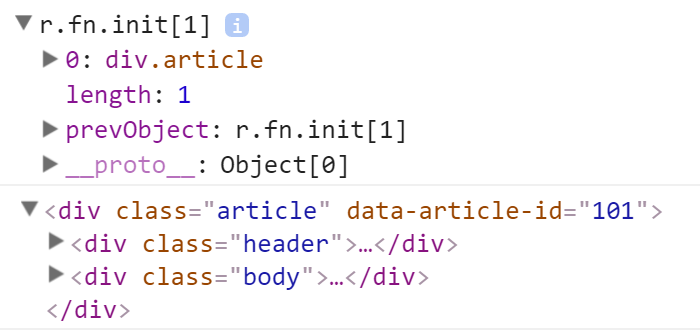
Пример 20
$(function () {
var mainArticle = $('#article_main');
//нет родителя с тегом body
console.log(mainArticle.parent('body'));
console.log(mainArticle.parent());
});
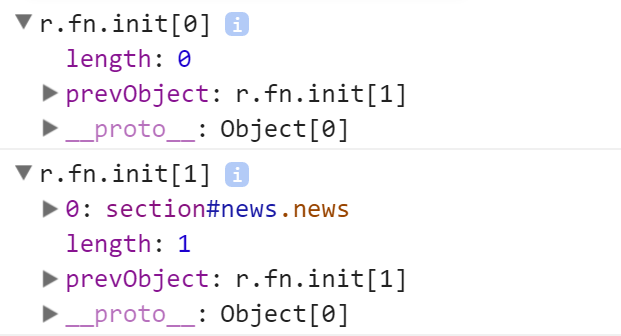
Манипуляция элементами
Атрибуты и свойства элементов
Метод attr()
| .attr(attrName) | возвращает значение атрибута первого элемента в наборе |
| .attr(attrName, value) | присваивает новое значение атрибуту у всех выбранных элементов |
| .attr({attrName1:value1, attrName2:value2, ...}) | присваивает новые значения группе атрибутов |
| .attr(attrName, function(index, value)) | присваивает атрибуту значение, возвращаемое функцией (если ничего не вернет, то атрибут не будет изменен). Index — позиция элемента в наборе |
| .removeAttr(attrName) | удаляет атрибут у выбранных элементов |
Метод prop()
| .prop(propName) | возвращает значение свойства. Если выбрано несколько элементов, то значение будет взято у первого |
| .prop(propName, value) | присваивает новое значение свойству у всех выбранных элементов |
| .prop({propName1:value1, propName2:value2, ...}): | присваивает новые значения группе свойств |
| .prop(propName, function(index, value)) | присваивает свойству значение, возвращаемое функцией |
| .removeProp(propName) | удаляет свойство у выбранных элементов |
Атрибуты vs DOM-свойства
- Узел DOM – это объект, поэтому, как и любой объект в JS, он может содержать пользовательские свойства и методы
- Нестандартные свойства и методы видны только в JS и никак не влияют на отображение соответствующего тега. Свойства могут иметь любое значение, их названия чувствительны к регистру и работают за счет того, что DOM-узлы являются объектами JS
- HTML-теги, у которых есть текстовые атрибуты, также являются элементам DOM
- В отличие от свойств, атрибуты всегда являются строками, их имена нечувствительны к регистру (ведь это HTML), и видны в innerHTML
Пользовательские атрибуты
В HTML5 была введена такая функциональность, как пользовательские атрибуты. Их суть в том, что программист может применить к элементу дополнительные атрибуты, которые будут хранить некоторое дополнительное значение. Подобные атрибуты начинаются с префикса data-, после которого идет собственно название атрибута и его значение
Метод data()
Если выбрано несколько элементов, то функция будет работать только с первым из них
| .data() | возвращает все пользовательские атрибуты в виде объекта |
| .data(name) | возвращает значение пользовательского атрибута |
| .data(name,value) | присваивает новое значение пользовательскому атрибуту |
| .data(obj) | присваивает новые значения группе атрибутов |
Изменение стилей
Базовые методы
| .height() | возвращает/задает высоту элемента |
| .offset() | получает/задает координаты элемента на странице |
| .outerHeight() | возвращает высоту элемента (включая заполнение и границу) |
| .outerWidth() | возвращает ширину элемента с учетом внутренних отступов, границы и внешних отступов |
| .position() | получает значение позиции элемента top и left относительно отступов его родителя |
| .width() | получает/задает ширину элемента |
Метод css()
| .css(property) | получает значение css-свойства |
| .css(property, value) | устанавливает для всех выбранных элементов css-свойство |
| .css(property, function(index, value)) | присваивает css-свойству значение, возвращаемое функцией |
| .css(obj) | присваивает новые значения группе css-свойств |
Использование классов
| .addClass() | добавляет класс(ы) выбранным элементам страницы |
| .hasClass(className) | проверяет наличие класса у выбранных элементов |
| .removeClass(className) | удаляет заданные классы у элементов |
| .toggleClass(className) | добавляет или удаляет заданный класс(ы) по принципу переключателя |
Содержимое элементов
Метод html()
| .html() | получает разметку html первого элемента в наборе |
| .html(htmlString) | устанавливает в качестве разметки элемента код html, переданный в качестве параметра |
| .html(function(index, oldhtml) | устанавливает разметку с помощью функции |
Метод text()
| .text() | получает текст первого элемента в наборе |
| .text(text) | устанавливает в качестве текста элемента строку, переданную в качестве параметра |
| .text(function(index, text)) | устанавливает текст с помощью функции |
Пример
Код страницы
<!DOCTYPE>
<html>
<head>
<title>Jquery</title>
</head>
<body>
<section id="news" class="news">
<div id="article_main" class="article" data-article-id="47" data-type="Main">
<div class="header">
<p>article #2</p>
</div>
<div class="body">
<textarea rows="2" cols="60">Hello</textarea>
<input type="checkbox" checked="checked">
</div>
</div>
<div class="article" data-article-id="101" data-type="Option">
<div class="header">
<p>article #2</p>
</div>
<div class="body">
<textarea rows="2" cols="60">Hey</textarea>
<input type="checkbox" checked="checked">
</div>
</div>
</section>
<script src="jquery-3.1.1.min.js"></script>
</body>
</html>
Пример 1
$(function () {
var article = $('#article_main');
console.log(article.attr('class'));//article
article.attr('class', 'article-new');
console.log(article.attr('class'));//article-new
article.removeAttr('class');
console.log(article.attr('class'));//undefined
});
Пример 2
$(function () {
var article = $('#article_main');
console.log(article.prop('class'));//article
article.attr('class', 'article-new');
console.log(article.prop('class'));//article-new
article.removeProp('class');
console.log(article.prop('class'));//article-new
});
Пример 3
$(function () {
var checkbox = $('.article input[type="checkbox"]');
console.log(checkbox.prop('checked'));//true
checkbox.prop('checked', false);
console.log(checkbox.prop('checked'));//false
checkbox.removeProp('checked');
console.log(checkbox.prop('checked'));//false
});
Пример 4
$(function () {
var checkbox = $('.article input[type="checkbox"]');
console.log(checkbox.prop('custom'));//undefined
checkbox.prop('custom', 1000);
console.log(checkbox.prop('custom'));//1000
checkbox.removeProp('custom');
console.log(checkbox.prop('custom'));//undefined
});
Пример 5
$(function () {
var article = $('.article').eq(1);
console.log(article.data());
article.data('article-id', 1000);
console.log(article.data('article-id'));
article.data({articleId : 1, text : ["Hello", "World"]});
console.log(article.data());
});
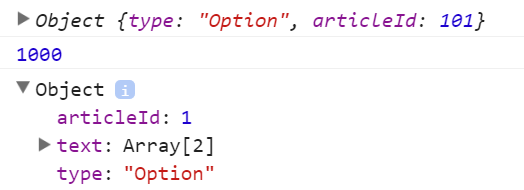
Пример 6
$(function () {
var article = $('#article_main');
console.log(article.css('margin'));//0px
article.css('margin-left', 10);
console.log(article.css('margin'));//0px 0px 0px 10px
article.css('color', function (index, oldValue) {
return oldValue == 'rgb(0, 0, 0)'
? 'yellow'
: 'black';
});
});
Пример 7
$(function () {
var article = $('#article_main');
console.log(article.height());//72
console.log(article.width());//1288
article.height(article.height() + 100);
article.width(article.width() + 100);
console.log(article.height());//172
console.log(article.width());//1388
});
Пример 8
$(function () {
var article = $('#article_main');
console.log(article.attr('class')); //article
article.addClass('class1 class2');
console.log(article.attr('class')); //article class1 class2
article.toggleClass('class1 class3');
console.log(article.attr('class')); //article class2 class3
console.log(article.hasClass('class1'));//false
console.log(article.hasClass('article'));//true
console.log(article.hasClass('article class2'));//true
article.removeClass('article class3');
console.log(article.attr('class')); //class2
});
Пример 9
$(function () {
var article = $('#article_main');
console.log(article.offset()); //left: 8; top: 8;
console.log(article.position());//left: 8; top: 8;
article.css({
'margin' : '10px',
'paddign': '10px'
});
console.log(article.offset()); //left: 18; top: 16;
console.log(article.position());//left: 8; top: 6;
});
Пример 10
$(function () {
var article = $('#article_main');
console.log(article.offset()); //left: 8; top: 8;
article.offset({
left: 100,
top: 100
});
console.log(article.offset()); //left: 100; top: 100;
});
Пример 11
$(function () {
var header = $('#article_main .header > p');
console.log(header.text());
header.text('^_^');
console.log(header.text());
console.log(header.parent()[0]);
});
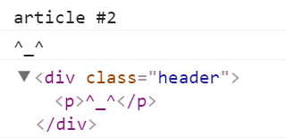
Пример 12
$(function () {
var header = $('#article_main .header');
console.log(header.html());// article #2
header.html('Habr');
console.log(header.html());
// Habr
});
Работа со структурой страницы
Создание и добавление дочерних элементов
Метод append()
| .append(htmlString) | вставляет указанную разметку html в конец элемента выборки |
| .append(element) | вставляет элемент в конец элемента выборки |
| .append(jQuery) | вставляет объект jQuery в конец элемента выборки |
| .append(function(index, value)) | вставляет элемент в конец элемента выборки с помощью функции |
Метод prepend()
| .prepend(htmlString) | вставляет указанную в параметре разметку html в начало элемента выборки |
| .prepend(element) | вставляет элемент в начало элемента выборки |
| .prepend(jQuery) | вставляет объекта jQuery в начало элемента выборки |
| .prepend(function (index, value)) | вставляет элемент в начало элемента выборки с помощью функции |
Дополнительные методы
| $(htmlString) | создает новый элемент с использованием функции jQuery |
| .clone( [withDataAndEvents ] [,deepWithDataAndEvents] ) | клонирует разметку уже существующего элемента |
| .appendTo(target) | добавляет объект в качестве дочернего к элементу (в конец), указанному в параметре метода |
| .prependTo(target) | добавляет объект в качестве дочернего к элементу (в начало), указанному в параметре метода |
Обертывание элементов
Метод wrap()
| .wrap(htmlString) | обертывает элементы выборки в элемент, создаваемый из разметки |
| .wrap(element) | обертывает элементы выборки в элемент html, переданный в качестве параметра |
| .wrap(selector) | обертывает элементы выборки в элемент документа, соответствующий селектору |
| .wrap(jQuery) | обертывает элементы выборки в объект jQuery |
| .wrap(function(index, value)) | обертывает элементы выборки в объект, возвращаемый функцией |
Другие методы
| .warpAll([htmlString| element|selector|jQuery| function]) | обертывает все элементы выборки в один элемент |
| .wrapInner([htmlString| element|selector|jQuery| function]) | обертывает содержимое элементов выборки в новый элемент |
Добавление сестринских элементов
Метод before()
| .before(htmlString) | добавляет в разметку перед каждым элементом выборки элемент, создаваемый из разметки html |
| .before(element) | добавляет в разметку перед каждым элементом выборки элемент html, переданный в качестве параметра |
| .before(jQuery) | добавляет в разметку перед каждым элементом выборки объект jQuery |
| .before( function(index, value)) | добавляет в разметку перед каждым элементом выборки объект, возвращаемый функцией |
Метод after()
| .after(htmlString) | добавляет после каждого элемента выборки элемент, создаваемый из разметки html |
| .after(element) | добавляет после каждого элемента выборки элемент html, переданный в качестве параметра |
| .after(jQuery) | добавляет после каждого элемента выборки объект jQuery |
| .after( function(index, value)) | добавляет после каждого элемента выборки объект, возвращаемый функцией |
Метод insertBefore()
| .insertBefore(htmlString) | элемент добавляется перед элементом, создаваемым из разметки html |
| .insertBefore(element) | элемент добавляется перед элементом html, который передается в качестве параметра |
| .insertBefore(jQuery) | элемент добавляется перед объектом jQuery |
| .insertBefore(selector) | элемент добавляется перед объектом, который соответствует селектору |
Метод insertAfter()
| .insertAfter(htmlString) | элемент добавляется после элемента, создаваемого из разметки html |
| .insertAfter(element) | элемент добавляется после элемента html, который передается в качестве параметра |
| .insertAfter(jQuery) | элемент добавляется после объекта jQuery |
| .insertAfter(selector) | элемент добавляется после элемента, который соответствует селектору |
Замена элементов
| .replaceWith(htmlString| jQuery|element|function) | замещает внутренне содержимое элемента новым содержимым |
| .replaceAll(htmlString| jQuery|element|function) | замещает все элементы, определенные в параметре, новым элементом |
Удаление элементов
| .remove([selector]) | удаляет элементы из структуры DOM |
| .detach() | аналогичен методу remove, но при удалении объекта сохраняются все связанные с ним данные |
| .empty() | очищает содержимое элементов, делая их пустыми |
Пример
Код страницы
<!DOCTYPE>
<html>
<head>
<title>Jquery</title>
</head>
<body>
<section id="news" class="news">
<div class="article">
<div class="header">
<p>article #1</p>
</div>
<div class="body">
<textarea rows="2" cols="60">Hello</textarea>
</div>
</div>
</section>
<script src="jquery-3.1.1.min.js"></script>
</body>
</html>
Пример 1
$(function () {
var article = $(
`
`
);
$('#news').append(article);
});
Пример 2
$(function () {
var template =
`
`;
$(template).appendTo($('#news'));
});
Пример 3
$(function () {
var article = $('.article');
var clone = article.clone();
console.log(clone[0]);
});
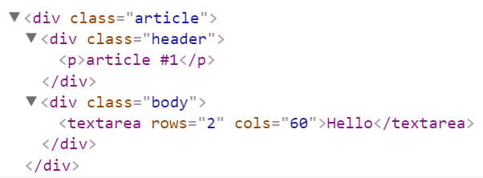
Пример 4
$(function(){
var textarea = $('textarea');
textarea.wrap('');
console.log(textarea.parent()[0]);
});

Пример 5
$(function(){
var paragraph = $('.header > p');
paragraph.wrapInner('');
console.log(paragraph[0]);
});
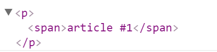
Пример 6
$(function(){
var paragraph = $('.header > p');
var dateItem = document.createElement('span');
dateItem.className = 'date';
dateItem.innerHTML = '01.03.2017';
paragraph.before(dateItem);
console.log(paragraph.parent()[0]);
});
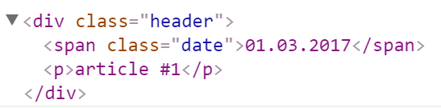
Пример 7
$(function(){
var paragraph = $('.header > p');
var template = '01.03.2017';
$(template).insertAfter(paragraph);
console.log(paragraph.parent()[0]);
});
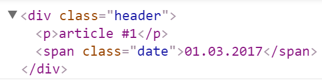
Пример 8
$(function(){
var template = `
(@_@)
`;
$('.article').replaceWith(template);
console.log($('body').children().get(0));
});
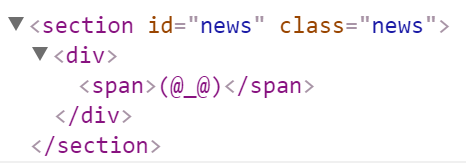
Пример 9
$(function(){
var article = $('.article');
article.find('.header').remove();
article.find('.body').empty();
console.log(article.get(0));
});
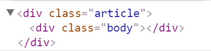
События
Регистрация и удаление обработчиков
Метод bind()
Метод bind добавляет обработчики событий только к тем элементам, которые на момент его действия уже существуют в структуре DOM
.bind(eventType [, eventData ], handler)
$(function(){
$('button').bind('click', function(){
console.log('Обработчик события click');
//получение доступа к елементу через $(this)
console.log($(this).html());
});
});
Метод unbind()
.unbind(eventType [, handler ])
$(function(){
$('button').bind('click', function(e){
console.log('Обработчик события click');
});
$('button').unbind();
// или
$('button').unbind('click');
});
Метод one()
.one(events [, data ], handler)
$(function(){
$('button').one('click', function(e){
console.log('Обработчик события click');
console.log($(this).attr('class'));
});
});
Пример методов-оберток
| .blur() | обработчик потери фокуса |
| .change() | обработчик изменения заданного элемента формы |
| .click() | обработчик нажатия мышью по элементу |
| .focus() | обработчик получения фокуса |
| .keypress() | обработчик ввода символа с клавиатуры |
| .resize() | обработчик изменения размеров окна браузера |
| .scroll() | обработчик "прокрутки" элементов документа |
Спасибо за внимание